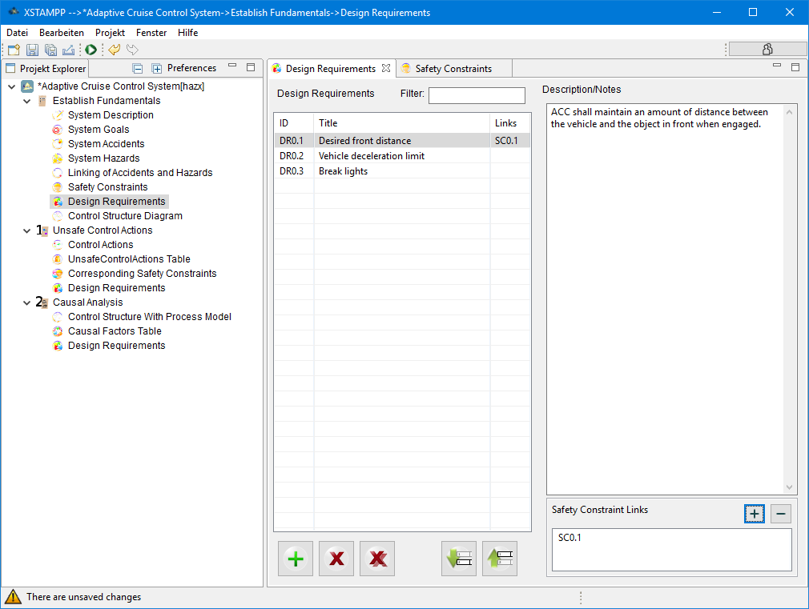

#-------------------------------------------------------------------------------
# Copyright (C) 2018 Lukas Balzer, Asim Abdulkhaleq, Stefan Wagner Institute of SoftwareTechnology, Software Engineering Group University of Stuttgart, Germany.
# All rights reserved. This program and the accompanying materials
# are made available under the terms of the Eclipse Public License v1.0
# which accompanies this distribution, and is available at
# http://www.eclipse.org/legal/epl-v10.html
#
# Contributors:
# Lukas Balzer, Asim Abdulkhaleq, Stefan Wagner Institute of SoftwareTechnology, Software Engineering Group University of Stuttgart, Germany - initial API and implementation
#-------------------------------------------------------------------------------
Design Requirements

A step 0 Design Requirement can be linked to a step 0 Safety Constraint in order to model the trace between the specification of the constraint and the corresponding measure.
For details on how to use the common table interface please refer to the Common Table View